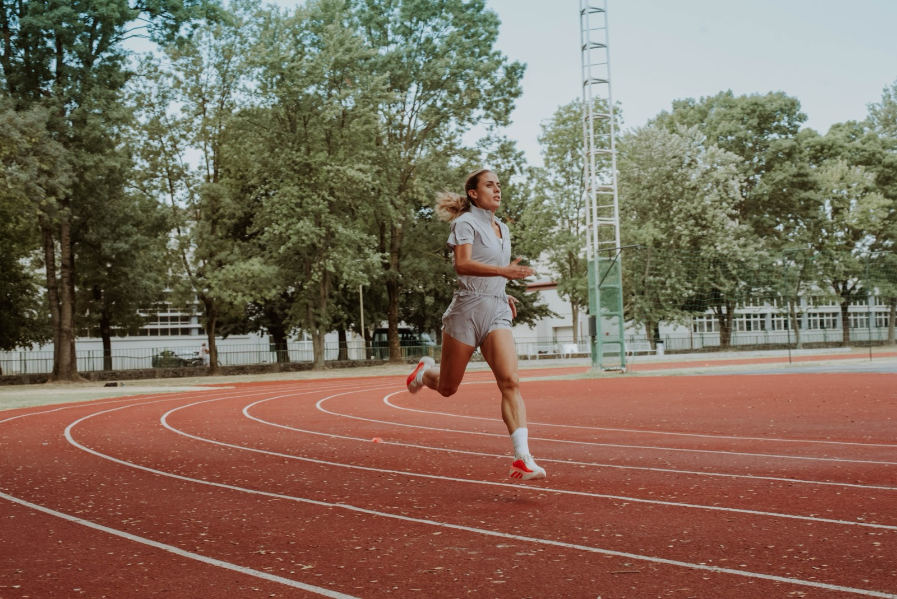

Portreti
Osobno fotkanje za tebe – i kad ti je prvo profesionalno, i kad se vraćaš po nove fotke.
Lens Queen je fotografkinja Andrea. Portreti, fotografije proizvoda za brendove, zaruke, ples i sport te kreativni koncepti, uz brz dogovor i pomoć oko poziranja.

Ne moraš biti model ni „fotogenična”. Andrea predloži ideje, objasni poze i vodi kroz cijeli proces – to klijenti najčešće ističu u recenzijama.
Javi se pozivom ili upitom. Dogovorite vrstu fotkanja, lokaciju i ideju – Andrea rado predloži što i kako.
„Brzo i lako smo se sve dogovorile, a puno su mi značili i njeni savjeti i prijedlozi.”Sonja Nedić
Opuštena atmosfera i pomoć oko poziranja, da se ni u jednom trenutku ne osjećaš nesigurno pred kamerom.
„Točno mi je objasnila poze tako da su fotke izgledale još bolje nego što sam zamislila.”Ana Marie
Odabrane i obrađene fotografije dobivaš nakon fotkanja, a rok dogovarate unaprijed.
„Stigle su nam odmah sljedeći dan i stvarno izgledaju jako profesionalno.”Iva Valentić
Sve vrste fotkanja koje klijenti spominju u recenzijama na Google profilu Lens Queen.
Osobno fotkanje za tebe – i kad ti je prvo profesionalno, i kad se vraćaš po nove fotke.
Fotografije proizvoda za male brendove – na primjer cijela linija ručno rađenih svijeća.
Trenuci koje želiš sačuvati, snimljeni nenametljivo i s osjećajem za emociju.
Plesni treninzi, trčanje i pokret – fotografija koja hvata energiju, a ne pozu.
Fotkanje u vodi, s brašnom ili po tvojoj ideji – drugačije i zabavno.
Fotografije za poslovne profile, suradnje i projekte koji traže dosljedan stil.

„Njezin pristup je opušten i nenametljiv da vrlo brzo zaboraviš da te netko uopće fotografira. Ima jako dobar osjećaj za trenutak, detalje i emociju.”Marina Ratinčević · Google recenzija
Izbor recenzija s Google profila Lens Queen, prenesenih uz minimalno skraćivanje. Pročitaj sve na Googleu.
Fotkanje s Andreom bilo je moje prvo profesionalno fotkanje i bilo mi je baš lijepo iskustvo! Brzo i lako smo se sve dogovorile, a puno su mi značili i njeni savjeti i prijedlozi što i kako. Samo fotkanje bilo je lagodno i zabavno, a fotke su vrlo brzo bile gotove.
Andrea je fotkala sve proizvode našeg brenda svijeća i prezadovoljni smo, odlično uhvaćeni proizvodi i predivne fotke!
Andrea me fotkala već par puta i uvijek su fotke ispale predobro. Njen pristup je profesionalan, a opet je atmosfera opuštena i zabavna. Točno mi je objasnila poze tako da su fotke na kraju izgledale još bolje nego što sam zamislila.
Imala sam priliku surađivati s njom u nekoliko različitih situacija – od fotografiranja za službene suradnje, svojih zaruka, preko plesnog treninga, pa sve do potpuno spontanih trenutaka. Bez obzira na okolnosti, uvijek se savršeno prilagodi, stvori ugodnu atmosferu i uhvati one posebne trenutke.
Andrea me fotkala već nekoliko puta i svaki put je iskustvo bilo maksimalno ugodno i opušteno. S njom se sve brzo i lako dogovori. Posebno bih izdvojila fotkanje s brašnom kao jedno zanimljivo i drugačije iskustvo!
Prezanimljivo iskustvo. Andrea lijepo vodi kroz proces da se osjećaš ugodno u svojoj koži iako nisi „fotogenična”. Prezadovoljna sam rezultatom, a uz to mi se pojačalo samopouzdanje.
Predivno iskustvo od početka do kraja! Fotografije su ispale stvarno prekrasne, a najviše mi se svidjelo koliko je opuštena i prirodna. Baš zna uhvatiti trenutak bez onog osjećaja da poziraš.
Izuzetno profesionalna, kreativna i puna ideja! Tijekom cijele suradnje bila je vrlo ljubazna, pristupačna i susretljiva te je s lakoćom razumjela sve moje želje. Fotografije su isporučene brzo, a krajnjim rezultatom sam više nego zadovoljna.
Sve smo se brzo dogovorile. Ljubazna osoba, a fotke odlične. Stigle su nam odmah sljedeći dan i stvarno izgledaju jako profesionalno.
Ispuni nekoliko polja i pripremit ćemo poruku koju šalješ jednim dodirom. Ili jednostavno nazovi.